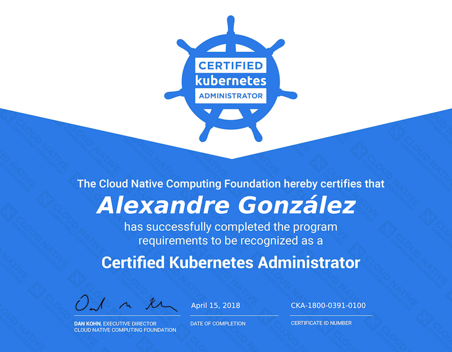

How to prepare the Certified Kubernetes Administrator exam
by Álex 2018-04-16 devops cka kubernetes linuxfoundation exam
Finally last weekend I did the CKA exam, I was procrastinating it a bit in part because I didn’t know what to expect since Kubernetes is huge and I thought that each day extra I spend reading about it would help me.
TLDR; I did pass the exam and if you work daily with Kubernetes or variants as Openshift you will be ok, they are not trying to catch you in some weird question that not even Kelsey would know how to answer 😀

Preparation
Giving the long quantity of topics that could be covered in the exam I have used several resources to study it. I will try to sort this in a way that makes sense if you have no knowledge about Kubernetes at all, if you are already familiarized with it you probably can skip some of the links.
First of all you will need to know the basic Kubernetes resources, if you are a video fan maybe this video could help you: “From pets to cattle, the way of Kubernetes” (no spam 😬) but after watching it you will need to get more in depth, for doing so I recommend the book “Kubernetes: Up and Running”.
Now that you know the basics probably you will want to test it, you have several ways for doing it: minikube, creating a cluster in GKE, etc… but if you don’t want to bother about it yet, use Katacoda and try to finish some of the free Scenarios they have there.
You are almost there but if you are missing troubleshooting experience because you never administrated a Kubernetes cluster take a look to: “Kubernetes Cookbook”; this book is pretty focused on pragmatic problems, it will definitely help you in case you need to troubleshoot stuff and try to follow “Kubernetes the hard way” that would help you a lot to understand how to install or fix the Kubernetes components.
If have read all the previous links but you still want more, take a look to the official documentation at kubernetes.io to review all the concepts.
The day of the exam
Part of my anxiety regarding the exam was that I didn’t know what to expect after sitting in my PC at 3pm, what would happen if my browser gets blocked? If I can’t understand a question? If I break my cluster? What’s going to be my “IDE”? I think some of these questions could be easily answered by the Linux Foundation in form of a video explaining how to do the exam, but I couldn’t find anything similar so I will try to help you here:
Before the exam, the examiner will ask you yo clean your desk and drawers, completely, I had some books in drawers that were not covered by the cam and I had to move them. I also had an schedule in a wall and I had to unglue it.
The place should be quiet because even if you usually work with headphones you will not be allowed to use them.
The examiner will ask you to see all the room, even under the desk.
The examiner will not talk to you by voice, only by chat. He/she will hear you because you will need to share the screen and micro. When you do that he will ask you to show open processes et al to be sure you are not copying. I found this a little bit excessive, but… rules and probably some previous cheaters (shame on you!).
The exam happens in a Chrome tab, the left side will show you the questions and the percentage it covers and you will be able to jump from one to another. All the questions are atomic. The right side is for the shell, I tried to use tmux there, but it was pretty difficult inside a browser terminal. You can also have a popup with notes.
After running a command in the shell it got blocked and I panicked, I went to my Inbox to write an email to support but luckily after few second (maybe a minute or two but it looked like a long time to me) it went back. I let the examiner know just in case he/she saw me in the email, and that’s it.
You can only open a tab with kubernetes.io and use its search box, no Google. In the past it seems it wasn’t like this. It’s ok because the answer is usually there, but you need to get used to it, maybe try it out during the preparation.
It’s ok to request a pause, but careful because the time doesn’t stop.
You have three hours to finish the exam, if you get blocked it’s better to skip that question for now and retake it later.
The wait
I did the exam last Saturday afternoon, from 3pm to 6pm and when I work up this morning I already had the result in my Inbox so you will not need to wait a lot for it, probably during work days it’s going to be even quicker.

From Retrofix
So, that’s it from me. If you are interested in Kubernetes and you work with it often you will not have any trouble passing the exam, however, I understand that giving the huge range of things that they could ask you the exam can be intimidating, trust yourself and you will be ok! If you do the exam and this helps you somehow or you just want to let me know anything, please ping me on @agonzalezro!